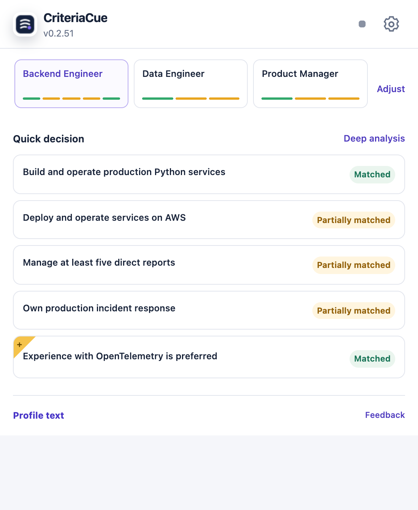
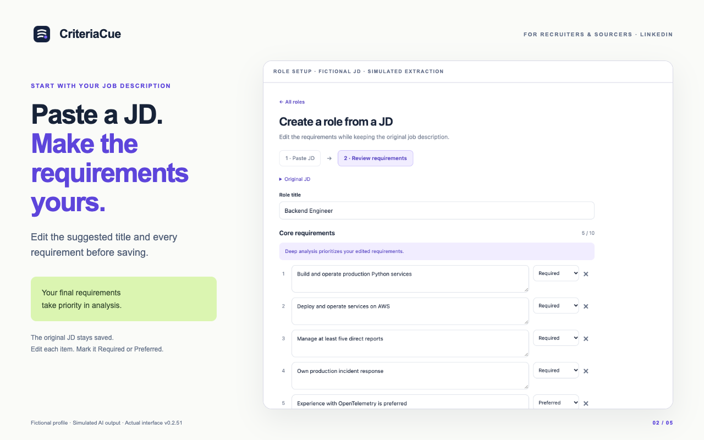
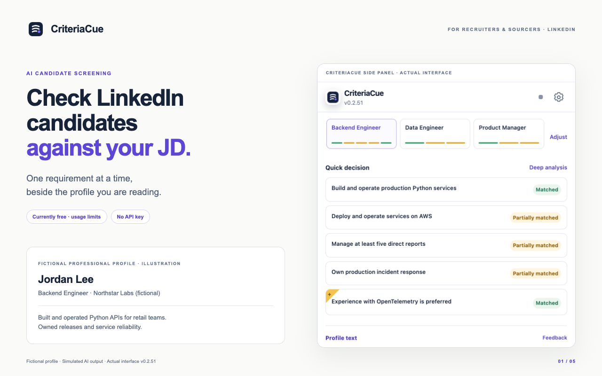
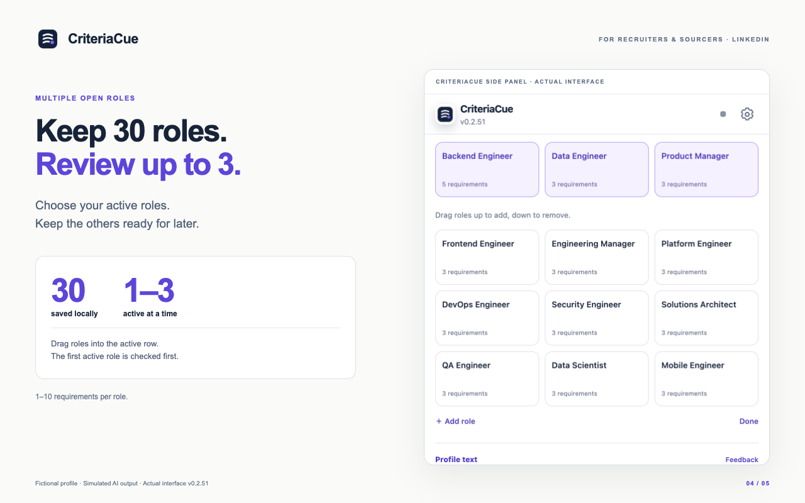
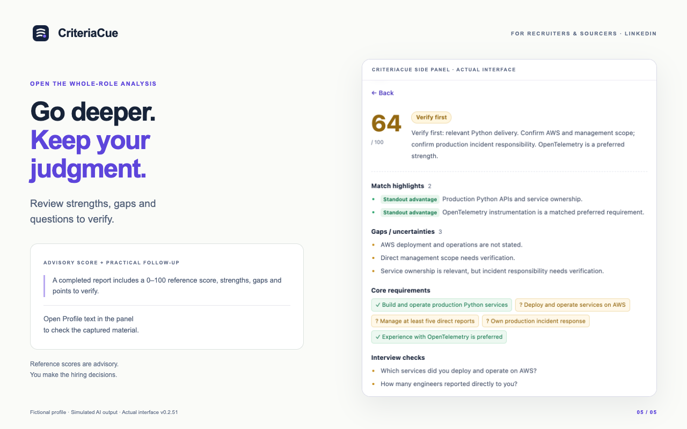

Three clear states.
MatchedPartially matchedNot matched
Check each requirement separately. These are AI judgments based on the available profile, not a hiring decision.
For recruiters, headhunters and sourcers
Quick decisions. Deeper context.
Turn your JD into editable required and preferred criteria. See a quick decision for each one beside the LinkedIn profile, then open deep analysis for the whole role.
Currently free, with usage limits
Email sign-in required. No API key needed.
Sign in with an email code. An internet connection is required.
Chrome & Edge · Other installation options

Fictional profile · Simulated AI output · v0.2.51 preview.
YOUR CRITERIA. TWO LEVELS OF REVIEW.
Keep the first pass readable. Use the whole-role analysis to understand the fit and prepare your next conversation.
Check each requirement separately. These are AI judgments based on the available profile, not a hiring decision.
AI identifies preferred items in the JD. Edit the classification yourself; a yellow corner keeps them visible in quick results.
When more than 50% of required items are partially matched, with at least two such items, the selected role automatically preloads deep analysis. A subtle cue lets you know it is ready.
Other roles trigger this rule only after you select them. Preferred items are excluded from the threshold. Auto-review must be on.
GET CRITERIACUE
Install from the Chrome Web Store for automatic updates. Edge and a current manual preview are also available. Store approval schedules can differ.
RECOMMENDED / GOOGLE CHROME
See the store for the latest approved release
Open the official store page and choose Add to Chrome. Use Chrome 142 or later. Updates are delivered through the store.
Add to ChromeMICROSOFT EDGE
See the store for its current version
Prefer Edge? Open the official listing in desktop Microsoft Edge and select Get. Versions can differ between stores.
Open Edge storeLATEST / MANUAL PREVIEW
Manual preview · v0.2.51
Try the current preview before store approval. Extract it and load the folder manually in Chrome 142 or later, or compatible desktop Edge. Developer mode and manual updates are required.
Download v0.2.51 ZIPchrome://extensions in Chrome or edge://extensions in Edge, enable Developer mode, and choose Load unpacked.manifest.json. Open CriteriaCue from the toolbar to begin setup.The preview and the store version are separate installations. Their roles and sign-in do not migrate automatically. Avoid running both on the same profile. The ZIP is an installation package, not offline AI: an internet connection and email sign-in are required.
If you already use the ZIP preview, keep a copy of your JDs and final requirements before switching. Store and preview installations have separate local data. Report any problems to support@minus.team.
01 / HOW IT WORKS
Keep the requirements beside the LinkedIn profile you are already reading. Open deep analysis when you need the reasons.

AI drafts the role title and distinctive requirements. Edit each item directly, add or remove rows, and choose Required or Preferred. Your final edited requirements take priority.

Open an individual LinkedIn profile and scroll as usual. Quick decisions use Matched, Partially matched and Not matched. A yellow corner marks preferred criteria. Missing information is not proof that the candidate lacks the experience.

Save up to 30 roles locally and keep 1–3 active beside the same profile. Drag to adjust active roles. The first active role is checked first.

Deep analysis streams a recommendation, strengths, gaps and questions to verify. Every completed report includes an advisory 0–100 reference score. Open the captured source text to check the basis.
Current interface previews: v0.2.51. Store releases may differ while an update is under review. Actual interface components with fictional roles and profiles, and simulated AI output. These examples do not demonstrate live accuracy or response speed. Select an image to view it at full size.
Earlier concept film · 30 seconds · Sound and English captions. Retained from the original Jev experiment; it illustrates the evidence-review idea, not the current interface or workflow. All data and reviews are simulated.
Video could not load. The current workflow is described above.
02 / TAKE A STARTING POINT
Copy a fictional JD starter, adapt it to your real opening, and paste it into CriteriaCue. Review the extracted requirements before saving. These examples are not universal hiring standards.
FICTIONAL JD / ENGINEERING
Edit the scope, stack and experience thresholds for your opening.
FICTIONAL JD / DATA
Look for ownership, data context and reliability work beyond a list of tools.
FICTIONAL JD / PRODUCT
Add the domain, product stage and responsibilities that make your opening distinctive.
Editable here. Nothing you type in these website examples is saved or sent.
03 / GETTING STARTED
Install from the Chrome Web Store, then open CriteriaCue from your toolbar.
Choose your language and grant LinkedIn website access. English is the default; a Simplified Chinese interface is also available. Reading runs while the side panel is open.
Your first successful verification creates an account. No password or API key is needed. AI features are currently free for registered users, with usage limits.
Try a labeled fictional sample or paste your own JD. Edit the extracted title and requirements, save, then open a LinkedIn profile you are authorized to review.
The current platform service is free for registered users, subject to usage limits. Email sign-in is required. No API key or membership purchase is needed. This describes the current offer; it is not a promise of unlimited use or permanent free access.
Roles, JDs and preferences are saved locally in the extension. For AI features, the required JD, final requirements and captured professional text are sent through the MINUS backend, hosted on Railway in Singapore, to Alibaba Cloud Bailian’s currently configured Beijing-region endpoint. Email-code delivery uses Resend.
The backend keeps encrypted diagnostic copies of submitted tasks, including JDs, professional text and model output, for 7 days, accessible only to authorized administrators. Minimized, deidentified examples may still contain professional information and may remain in a restricted, encrypted internal regression library until removed by an operator. Account and basic task metadata have no fixed automatic deletion schedule. Operational backups and external providers have separate retention terms.
For provider details, retention and deletion requests, read the extension privacy policy or contact support@minus.team. Optional extension usage analytics require your active choice and exclude profile text and URLs, JDs, requirements and analysis results. This site’s limited statistics are described in the website privacy notice.
Completed deep analysis includes an advisory 0–100 recommendation score, supported strengths, gaps and points to verify. The score is not a calibrated probability. CriteriaCue does not automatically rank, reject, hire or contact candidates. Missing information is not proof of a mismatch. You verify the evidence and make the decisions.
With your website permission, CriteriaCue reads the visible professional sections of the current LinkedIn profile as you scroll. It does not open other profiles, scroll or expand sections for you, read messages or contact details, or collect general browsing history. Close the panel to stop reading, or turn off Auto-review in Settings to pause automatic AI requests. Use only information you are authorized to process.
No. “ZIP” describes the installation method. Email sign-in and AI processing require an internet connection. The v0.2.51 manual preview requires you to install future updates yourself; store installations update through their store.
Email support@minus.team. Share what you tried and what happened, without candidate details or credentials. Feedback does not subscribe you to marketing.
BUILT BY MINUS
Try CriteriaCue on a LinkedIn profile you are authorized to review.
Currently free, with usage limits. Email sign-in required. No API key needed.